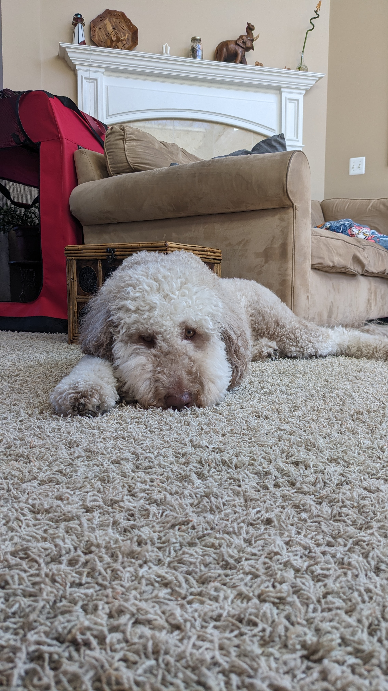
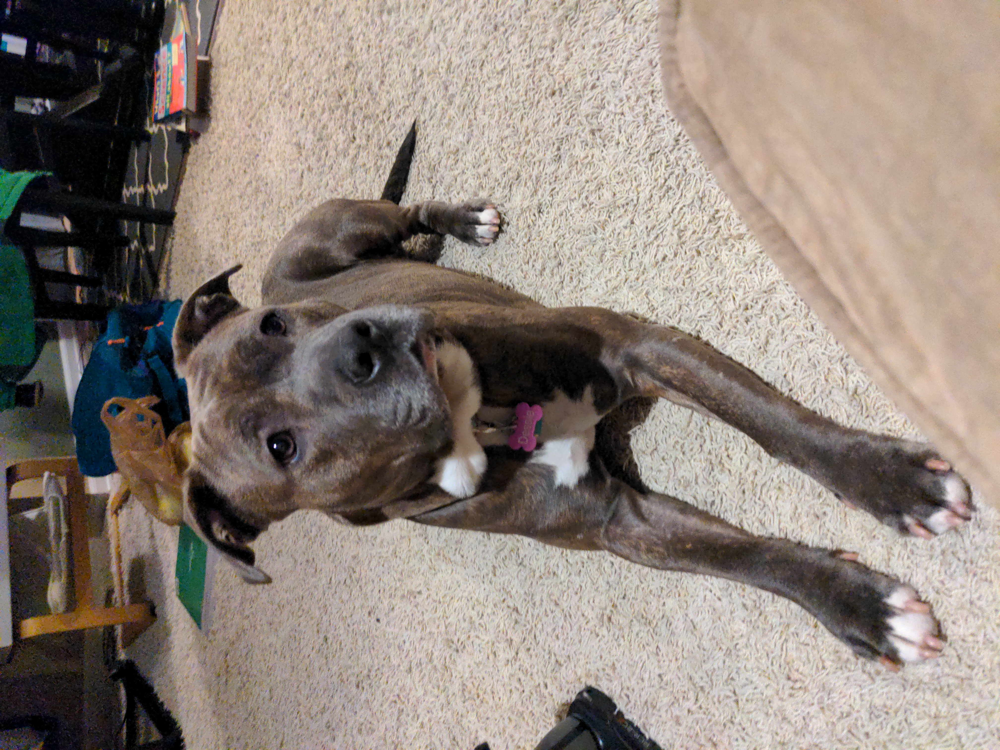

Cinnamon is energetic, bouncy and excitable. She loves to go outside and run for sticks, but is still working on bringing them back. She gives the best cuddles, and is very friendly.
Kali is calm, loyal and great with kids. Her favorite pastimes are going for long family walks around the neighborhood and licking out peanut butter containers. She loves all seasons and thrives in all types of weather.

Dessie is sweet, loving, and cuddly. She can come off as shy, but is exceedingly loyal when she gets to know you. She has a gift for catch and is surprisingly fast for her smaller stature.
Blue is silly, sleepy and has a big personality. He loves to go for walks in the woods and is very good at recall. He makes friends very easily and likes to be the leader of the pack.